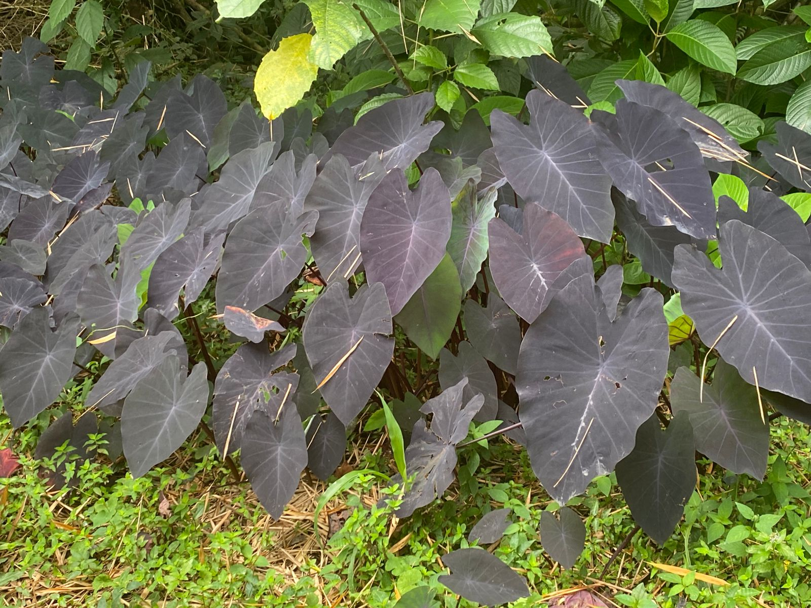
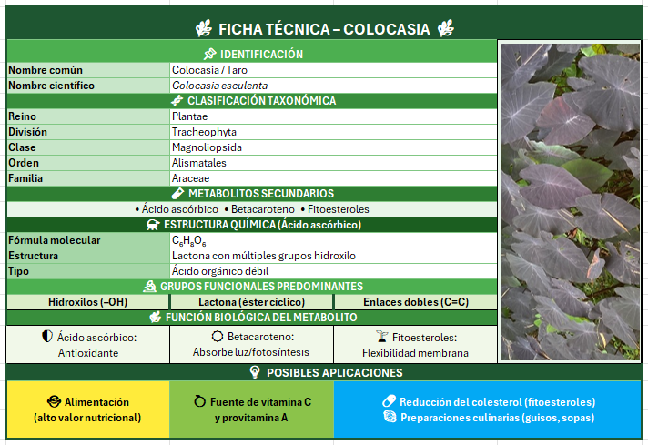

Nombre Común: Taro
Nombre Científico: Colocasia Esculenta
Familia Botánica: Araceae
Ubicación en el sendero: Alrededores del camino

La Colocasia esculenta, conocida como taro o colocasia, es una planta herbácea de la familia Araceae que se desarrolla en ambientes tropicales y húmedos, destacándose por su capacidad de adaptación a suelos con alta disponibilidad de agua. Desde el punto de vista químico, esta especie produce metabolitos secundarios como el ácido ascórbico, el betacaroteno y los fitoesteroles, los cuales presentan estructuras con grupos funcionales como hidroxilos (-OH), enlaces dobles (C=C) y lactonas, que les confieren alta reactividad. Gracias a estas características, el ácido ascórbico actúa como antioxidante protegiendo a la planta del daño oxidativo, el betacaroteno participa en la absorción de luz y procesos fotosintéticos, y los fitoesteroles contribuyen a la estabilidad de las membranas celulares, favoreciendo la resistencia y adaptación de la planta en su entorno.
